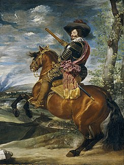

Bienvenido a esta página informativa sobre el rey Felipe IV. En ella podrás conocer la historia de diversas etapas clave de su reinado.

De nombre Gaspar de Guzmán, en 1615 consiguió que el Duque de Lerma (valido de Felipe III) lo nombrase gentilhombre de cámara del príncipe Felipe (posteriormente Felipe IV). Esto hizo que el Conde-Duque aumentase poco a poco su poder en la corte.
Cuando el príncipe subió al trono, Olivares pasó a ser el principal ministro del Rey. Al poco tiempo, Felipe IV relegó todas las labores de gobierno en la figura del Conde-Duque, quien se convirtió en su valido. Este tuvo control sobre la Monarquía Hispánica entre 1622 y 1643. Durante este periodo llevó a cabo reformas de diversa índole.
Primeramente, inició una campaña con el objetivo de erradicar la corrupción que afectaba al reinado anterior, por parte del Duque de Lerma. Además, emprendió varias reformas de carácter económico. Su principal fin era reflotar la economía, principal problema durante la etapa anterior, que había quedado sumida en una grave crisis, lo cual motivó la declaración, en varias ocasiones, de la bancarrota. Estas medidas pretendían también acabar con la inflación, además de impulsar la agricultura y el comercio. Sin embargo, eran ambiciosos proyectos que no dieron buenos resultados debido a la falta de constancia y dedicación.
La reforma más importante llevada a cabo por el Conde-Duque fue la denominada Unión de Armas. Este proyecto fue propuesto en 1625. Con él, se pretendía que todos los reinos de la Monarquía Hispánica contribuyesen de forma equitativa a su mantenimiento y sostén militar y económico. El fin de este proyecto era desahogar al reino de Castilla, cuya economía estaba en crisis debido a que este territorio era el principal sostén de la economía de la Monarquía.
Este proyecto no fue bien aceptado en algunos reinos, como la Corona de Aragón, Portugal y en menor medida, en los reinos italianos, lo cual motivó diversas revueltas en la década de 1640.